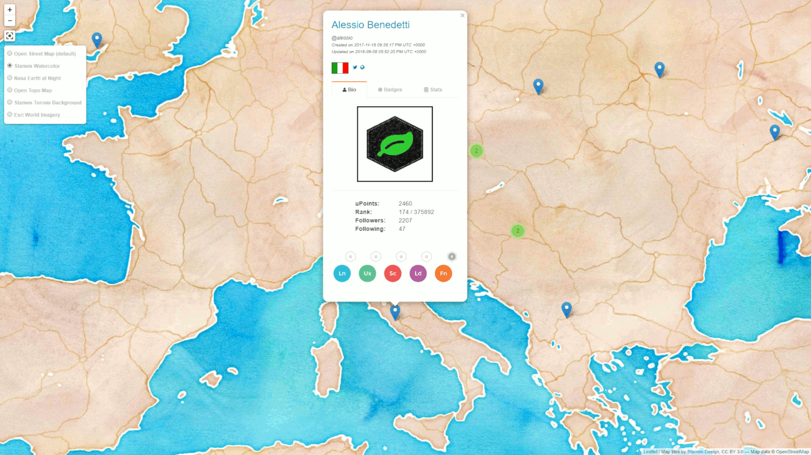
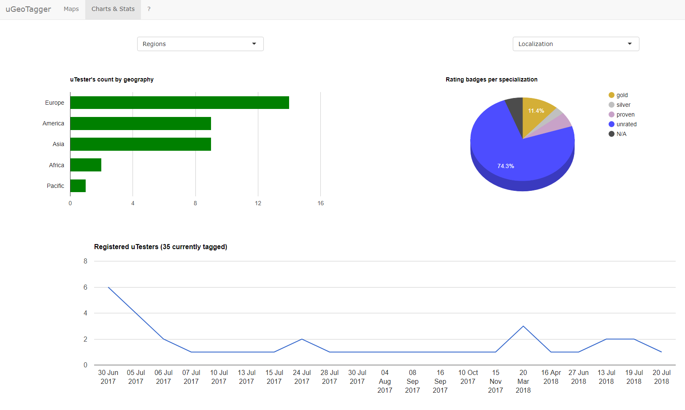
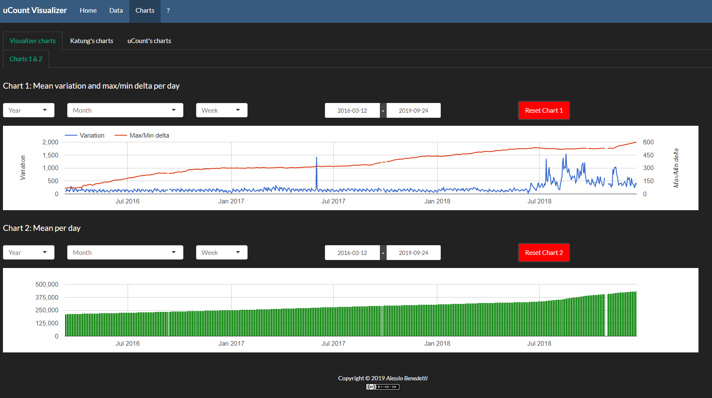

uTest is a professional network for Testers, born on 2007. I signed up on 2015, and during the first two years, I became further and further engaged in the community as well as in the testing activities with over 300 test cycles made.
I also was able to reach the silver rating in the functional area. From late 2017 I've reduced the testing activities as a started sharpening my skills in the analytics field, but I kept being active in the community.
Should you be interested in uTest, sign up and take at look at my utest profile and articles.

uTest has been an inspiration for my first two works, two shiny apps about uTesters' stats - uCount Visualizer shown in the image here on the right - and locations - uGeoTagger shown in the image on top.
I made them during my spare time and it was real fun, nonetheless they were a nice application of some of the new skills I studied.
P.S: guess it? in uTest there are no users... 😉 but uTesters !
Biodiversity in National Parks
bioNPS
This app was made for the 2019 Shiny Contest (first edition). The dataset is contains the National Park Service database of animal and plant species identified in individual national parks. The application offers a graphical representation of the data with maps and charts.